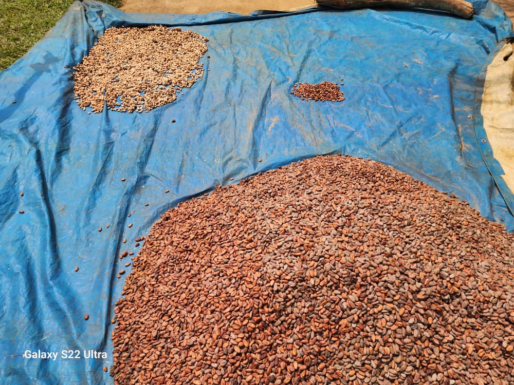
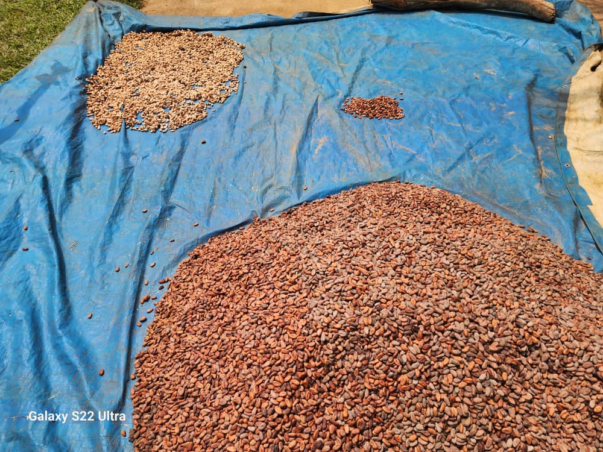

Nos Actions de Développement
Découvrez nos trois projets structurants à fort impact socio-économique
Agriculture Durable : Le Projet "Crédit Cacao"
Contexte et Enjeux
Le cacao représente une filière stratégique pour la région, mais de nombreuses plantations étaient à l'abandon faute de moyens financiers pour leur entretien et leur relance. Cette situation a entraîné une baisse drastique des revenus pour les planteurs et une dégradation du tissu économique local. Le projet "Crédit Cacao" a été initié pour inverser cette tendance en apportant un soutien financier et technique ciblé.
Notre Approche
Le modèle du projet repose sur l'octroi de micro-crédits aux cacaoculteurs pour la restauration de leurs plantations. Ce financement permet l'achat d'outils, de plants et le paiement de la main-d'œuvre nécessaire à la réhabilitation des cacaoyers. Un contrat est établi avec chaque bénéficiaire, définissant les modalités de remboursement et assurant un suivi technique rigoureux pour garantir le succès de la récolte.
Impacts et Perspectives
Le projet "Crédit Cacao" a déjà permis de revitaliser plusieurs hectares de plantations, générant des revenus stables pour des dizaines de familles. À terme, nous visons à faire de la filière cacao un moteur de développement économique durable pour tout le secteur des Ekonda, en améliorant la qualité de la production et en facilitant l'accès aux marchés.
 



Sécurité Alimentaire : Le Projet "Protéines d'Avenir"
Contexte et Enjeux
La malnutrition et la carence en protéines animales constituent un problème de santé publique majeur dans le secteur des Ekonda. Le manque d'accès à une alimentation équilibrée freine le développement des enfants et affaiblit la population. Pour répondre à ce défi, SAC3 a lancé un programme ambitieux d'élevage avicole.
Notre Approche
Nous proposons le nom "Protéines d'Avenir" pour ce projet, qui reflète sa mission de garantir un futur plus sain pour les communautés. Le projet consiste à mettre en place des unités d'élevage de poules pondeuses et de poulets de chair. Nous formons les bénéficiaires aux techniques d'élevage modernes, à la gestion sanitaire des volailles et à la commercialisation des produits (œufs et viande). L'objectif est de créer une filière avicole locale, rentable et durable.
Impacts et Perspectives
"Protéines d'Avenir" contribue directement à l'amélioration de la sécurité alimentaire et nutritionnelle des ménages. En plus de fournir une source de protéines de haute qualité, le projet génère des revenus complémentaires pour les familles, en particulier pour les femmes qui sont souvent en première ligne de cette activité. Nous prévoyons d'étendre ce programme à plusieurs villages pour maximiser son impact.
Autonomisation des Femmes : Le Projet d'Atelier de Couture
Contexte et Enjeux
Les filles-mères sont souvent confrontées à l'exclusion sociale et à la précarité économique. Sans formation ni opportunités d'emploi, elles peinent à subvenir à leurs besoins et à ceux de leurs enfants. SAC3 est convaincu que l'autonomisation de ces jeunes femmes est une clé du développement communautaire.
Notre Approche
Nous envisageons la création d'un grand atelier de couture pour offrir une formation professionnelle qualifiante aux filles-mères. Ce projet leur permettra d'acquérir des compétences techniques en couture, en broderie et en gestion d'une petite entreprise. L'atelier fonctionnera également comme une coopérative de production, où les femmes pourront confectionner et vendre leurs créations.
Impacts et Perspectives
Ce projet vise à restaurer la dignité et l'autonomie financière des filles-mères. En leur donnant un métier et un cadre de travail solidaire, nous leur offrons les moyens de construire un avenir meilleur pour elles-mêmes et leurs enfants. À long terme, cet atelier de couture a le potentiel de devenir un pôle d'excellence artisanale dans la région, valorisant les savoir-faire locaux et créant une dynamique économique positive.
Rejoignez Notre Mission
Ensemble, bâtissons un avenir durable pour les communautés Ekonda